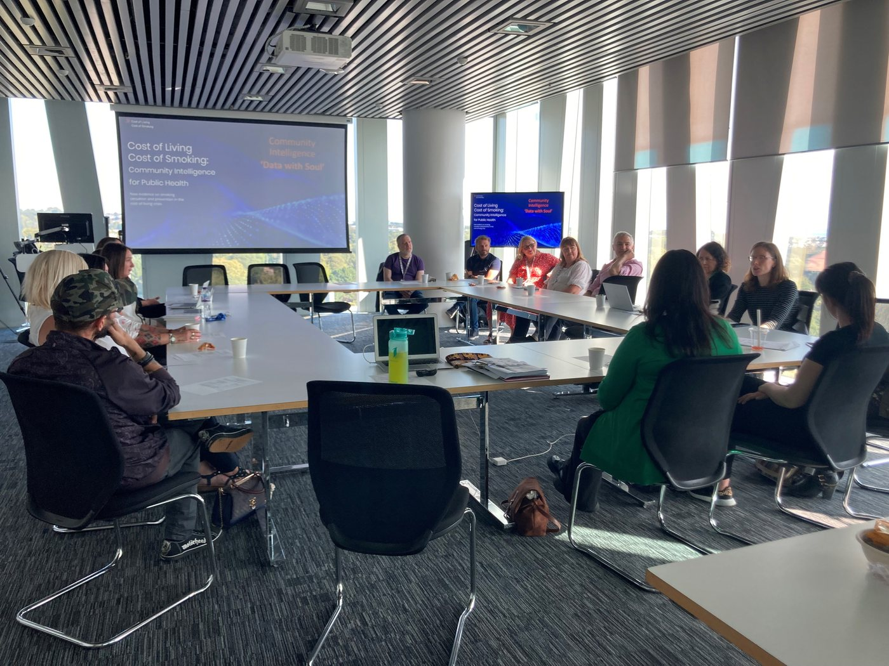

News · September 2023
Sharing new ‘community intelligence’ with senior planners, managers and practitioners from NHS Grampian

On 1st September, we brought together community members from under-served areas in Aberdeenshire with officials from NHS Grampian to meet and exchange on the study and future directions. The meeting was held in the Duncan Rice Library at the University.
In the meeting, we reviewed ‘community intelligence’: new data and evidence generated in the study that provide grounded insights and collective knowledge on the lived experience of smoking in the cost-of-living crisis, the burden of the problem of smoking, and evidence on interventions to address it. See our Evidence page for the full set of data produced.
The group discussed the implications of these data for local services, and reviewed a variety of ways forward in terms of the suitability of the process for local and national policy and practice inclusive of community voice. We are grateful to NHS Grampian for the time and space to review these data and consider future directions, and look forward to progressing the next steps.
All news